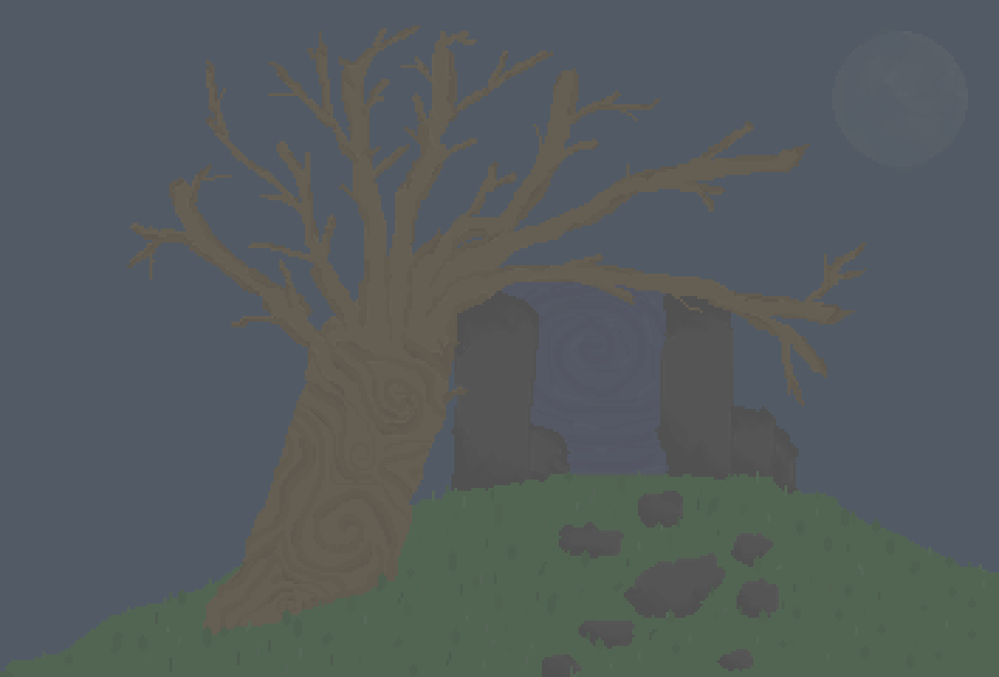

The Portal
The portal you came though caused destruction to the environment and will burn you if you try to go back though.
Anything around the area is either dead or poisonous.
The portal you came though caused destruction to the environment and will burn you if you try to go back though.
Anything around the area is either dead or poisonous.

The faces of these two bears have been stolen by the wizard Zeff.
He plans to use the faces in a spell so he can blend in.
The face provides a disguise, the eyes and mouth help understand the bears.
Patches spends their time in the grave yard when they are lonely.
Give them a flower and keep them company for a bit.
Box and Frog hanging out in their favourite spot.
The trees have been trimmed to be more square.